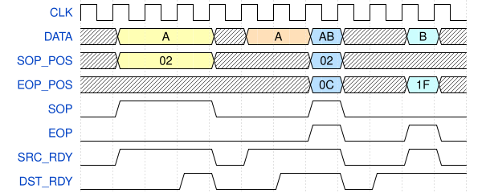

FLU bus specification¶
This page describes the FrameLinkUnaligned (FLU) protocol, which is a successor of the FrameLink protocol. FrameLinkUnaligned (or FLU) is designed for wide data busses (256 bits and above) without wasting as much bandwidth as with FrameLink. Main differences:
Adds support for unaligned start of packet. Fineness of the alignment is a protocol parameter (width of the
SOP_POSsignal).Drops support for parts. Packet header or other additional data must be treated by other mechanism/data path.
Uses positive logic. No
_Nsuffixes.
Table of generics¶
These are generics of the modules using the FLU protocol.
Generic name |
Meaning |
Possible values |
|---|---|---|
DATA_WIDTH |
Width of the data bus in bits |
16, 32, 64, 128, 256, 512, 1024, … |
SOP_POS_WIDTH |
Width of the SOP_POS signal in bits |
1, 2, 3, … up to log2(DATA_WIDTH/8) |
Table of signals¶
Signal name |
Width |
Direction |
Description |
|---|---|---|---|
DATA |
DATA_WIDTH |
S -> D |
Data bus. Valid when SRC_RDY=DST_RDY=1. Lowest (first) byte is at position (7 downto 0). |
SOP_POS |
SOP_POS_WIDTH |
S -> D |
Start of packet position. Valid when SRC_RDY=DST_RDY=SOP=1. Zero value marks that the first packet byte is at DATA (7 downto 0), other values mark start with the step DATA_WIDTH/(2^SOP_POS_WIDTH) |
EOP_POS |
log2(DATA_WIDTH/8) |
S -> D |
End of packet position. Valid with SRC_RDY=DST_RDY=EOP=1. All ones mark that the last packet byte is at DATA (DATA_WIDTH-1 downto DATA_WIDTH-8), zero marks that the last packet byte is at DATA (7 downto 0). |
SOP |
1 |
S -> D |
Start of packet. Valid when SRC_RDY=DST_RDY=1. |
EOP |
1 |
S -> D |
End of packet. Valid when SRC_RDY=DST_RDY=1. |
SRC_RDY |
1 |
S -> D |
Source ready. 1 means that source has all signals set ready for the transmission. |
DST_RDY |
1 |
D -> S |
Destination ready. 1 means that destination is ready to accept one word. |
Usage guidelines¶
Infrastructure module names (fifos, transformers etc.) should use the
flu_prefix to distinguish between FrameLink and FrameLinkUnaligned.fl_prefix is forbidden.Signal ordering in simulation, signal and entity declaration and instantion should be as defined in the first table of this document. This is for easier copy-pasting in text editors.
All signals of the protocol are synchronized to one clock, which must be common to source and destination.
Source and destination must share the reset signal.
SRC_RDYandDST_RDYmust be 0 during reset.- There may be two reasons for
SOP=EOP=1: End of packet p1 and start of packet p2. This is when
EOP_POS*8 < SOP_POS*DATA_WIDTH/(2^SOP_POS_WIDTH).Start and end of packet p1 in the same word. This is when the above does not apply.
- There may be two reasons for
Timing diagram example¶
Example uses DATA_WIDTH=512 and SOP_POS_WIDTH=3:
{kind=link}

Packet A starts in cycle 4.
SOP_POS=2, therefore the first byte is atSOP_POS*DATA_WIDTH/(2^SOP_POS_WIDTH) = 2*512/(2^3) = 128. More precisely(135 downto 128).(127 downto 0)is unused. 48 bytes are transferred (512-128)/8.Packet A continues in cycle 7. 64 bytes are transferred.
Packet A ends in cycle 8.
EOP_POS=0x0C=12, therefore the last byte of packet A is at(103 downto 96). 13 bytes of packet A is transferred. Packet A had 48+64+13=125 bytes.Packet B also starts in cycle 8.
SOP_POS=2, therefore the first byte of packet B is at(135 downto 128). 48 bytes of packet B is transferred.(127 downto 104)is unused.Packet B ends in cycle 11.
EOP_POS=0x1F=31, therefore the last byte of packet B is at(255 downto 248). 32 bytes is transferred. Packet B had 48+32=80 bytes.There is no
SOPin cycle 11, therefore(511 downto 256)is unused.
Copy-paste code blocks¶
Entity
-- Frame Link Unaligned input interface
RX_DATA : in std_logic_vector(DATA_WIDTH-1 downto 0);
RX_SOP_POS : in std_logic_vector(SOP_POS_WIDTH-1 downto 0);
RX_EOP_POS : in std_logic_vector(log2(DATA_WIDTH/8)-1 downto 0);
RX_SOP : in std_logic;
RX_EOP : in std_logic;
RX_SRC_RDY : in std_logic;
RX_DST_RDY : out std_logic;
-- Frame Link Unaligned output interface
TX_DATA : out std_logic_vector(DATA_WIDTH-1 downto 0);
TX_SOP_POS : out std_logic_vector(SOP_POS_WIDTH-1 downto 0);
TX_EOP_POS : out std_logic_vector(log2(DATA_WIDTH/8)-1 downto 0);
TX_SOP : out std_logic;
TX_EOP : out std_logic;
TX_SRC_RDY : out std_logic;
TX_DST_RDY : in std_logic;
Connection
RX_DATA => _data,
RX_SOP_POS => _sop_pos,
RX_EOP_POS => _eop_pos,
RX_SOP => _sop,
RX_EOP => _eop,
RX_SRC_RDY => _src_rdy,
RX_DST_RDY => _dst_rdy,
Signals declarations
signal _data : std_logic_vector(DATA_WIDTH-1 downto 0);
signal _sop_pos : std_logic_vector(SOP_POS_WIDTH-1 downto 0);
signal _eop_pos : std_logic_vector(log2(DATA_WIDTH/8)-1 downto 0);
signal _sop : std_logic;
signal _eop : std_logic;
signal _src_rdy : std_logic;
signal _dst_rdy : std_logic;